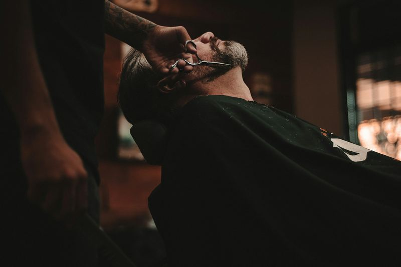
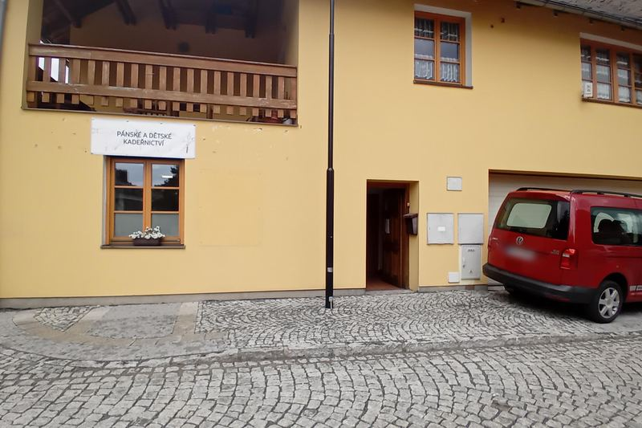
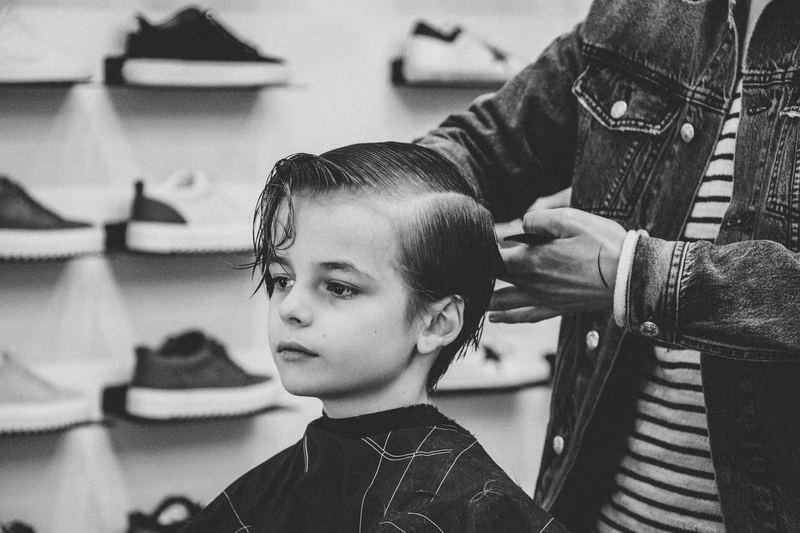
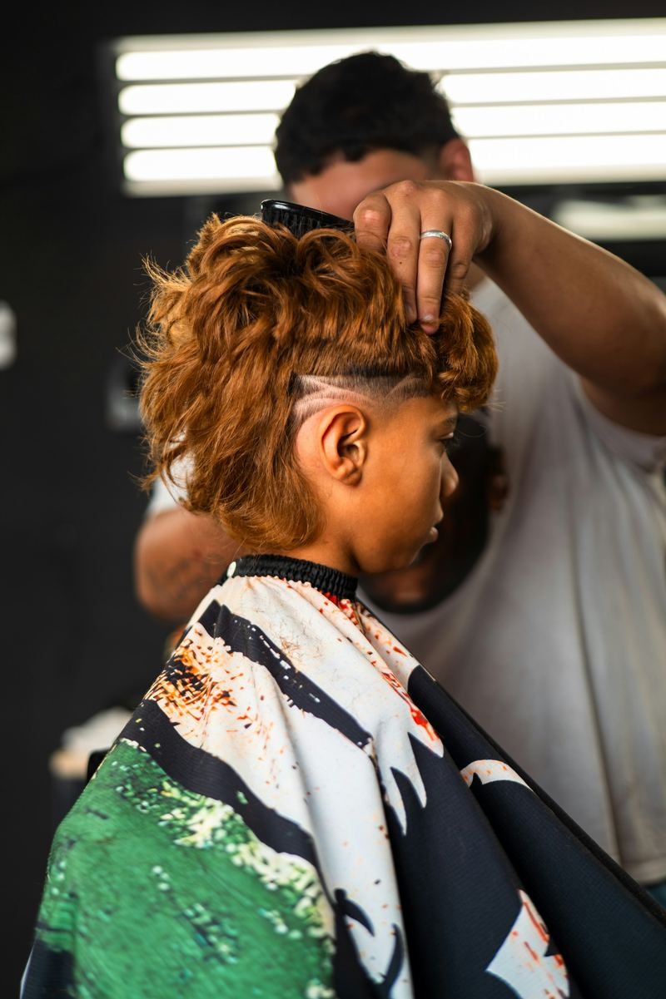

Pány
Klasické i moderní střihy, strojek i nůžky.
Pánské a dětské kadeřnictví na Husově 14 v Rýmařově. Když je někdo uvnitř, posadíte se a počkáte, než ostříhám pána před Vámi. Stříhám za sucha, vezmu i ženy na krátko.
Po, út, pá 8–17, st, čt 8–13

Objednávat se nemusíte. Stačí přijít, když mám otevřeno. Polední pauza je od 12 do půl jedné.
Za sucha, bez mytí a bez foukané. Rychle a přesně.

Klasické i moderní střihy, strojek i nůžky.

Kluky i holky, trpělivě a bez slz.

Krátké dámské střihy za sucha.
„Perfektní, precizní a rychlé ostříhání. Naprosto super.“
zákazník na Firmy.cz
„Opět ostříhaný a zase plná spokojenost. No prostě super.“
zákazník na Firmy.cz
„Super, kvalita, rychlost, spokojenost.“
zákazník na Firmy.cz